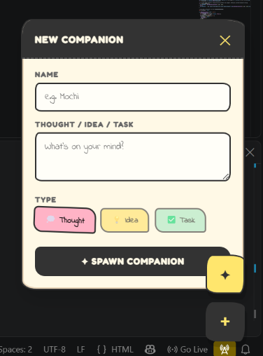
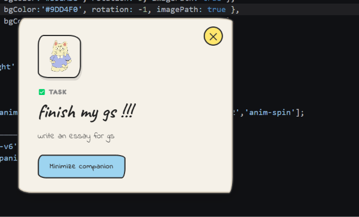
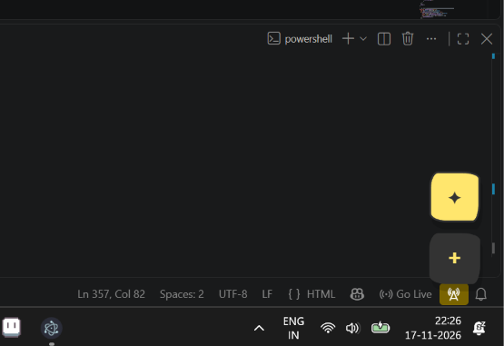
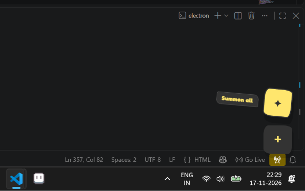

make a buddy

add a thought, task, or idea and give it a description. it becomes a floating cat on your desktop.
 kshiraja
kshiraja
kshiraja
kshiraja
2006 · @ blr, india.
a little desktop companion
a passive, constantly present buddy for the thoughts you don't want to lose.
context
ideas, tasks, and passing thoughts can disappear simply because i don't remember them later.
notebooks, lists, and widgets are easy to dismiss and forget about. reminders can help, but they often feel too interruptive.
i wanted a way to keep important thoughts visible without adding another notification to ignore.
a passive, constantly present buddy floating around your desktop.
cat-panion turns a thought, task, or idea into a small floating cat. it stays in view as a gentle visual cue, ready when you want to check in, but doesn't interrupt you with a reminder.
how it works
the interactions are simple, so adding a thought and checking it later feels lightweight.

add a thought, task, or idea and give it a description. it becomes a floating cat on your desktop.

click a cat to view the description attached to its thought, task, or idea.

use the plus button to add a buddy, or the star button to bring your cats back into view.

click the star to summon all cats and see your saved thoughts together again.
double-click a cat to dismiss it. press esc to quit the desktop experience.
different companionsgive each category its own companion, so ideas, tasks, and other thoughts can feel distinct.
gentler remindersexplore reminders or emotional states for companions, while keeping their presence calm rather than nagging.
what if a companion could help make starting feel easier?
a future version could use an agent that understands the requirements of a piece of work and helps reduce the friction between intending to do it and actually getting started. this is a direction to explore, not a feature in the current concept.